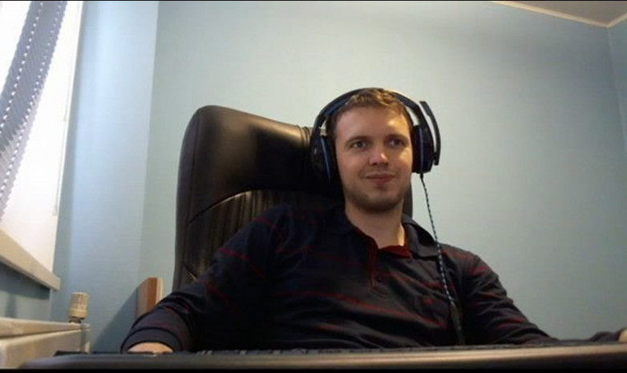

Біографія
Віта́лій Цаль, також відомий під псевдонімом «Arthas» та «Папіч» — український стример з Вінниці. Екс-стример платформи Twitch, веде прямі трансляції на власному каналі на платформі YouTube. Отримав популярність завдяки високому рівню гри в Dota 2, незвичному лексикону та емоційним реакціям під час гри. Має багато прізвиськ, серед яких найвідоміше «Папіч», фанати також використовують «Папаня», «Артас», «Вєлічайший», «Венеціанський маньяк», «Король Венеції», «Мер Вінниці». Точної інформації на рахунок його прізвища немає, оскільки Віталій приховує її та все що пов'язано з його особистим життям (за винятком того, що сам розказує на своїх трансляціях), в одних джерелах інформації Віталій Цаль, а в інших Громяко.
Віталій народився 19 листопада 1990 року у місті Вінниця в Україні. Ходив у звичайну школу, нічим не виділявся від інших учнів, після навчання зазвичай ходив грати у футбол, навіть якщо інших гравців не було, міг годинами набивати м'яч. Приблизно з початкових класів у нього з'являється ПК, за яким юний стример проводить багато часу. Зі слів Папіча, часом міг зривати уроки. Хоча Віталію подобалось вчити англійську мову, інші предмети йому були нецікаві, тому він починає байдуже ставитись до навчання та активно прогулювати школу. Стример не мав друзів у дитинстві, лише знайомих.
Попри це все Артас вважає своє дитинство щасливим, тому що у нього не було ніяких обов'язків. Приблизно в цей час в СНД набирає популярності гра Warcraft III, у багатьох людей вона стає улюбленою на той час, Віталій не виняток. Згодом у спільноті геймерів появляється користувацька мапа для Warcraft III: The Frozen Throne, DotA, на якій Папіч починає грати та відточувати свою майстерність.
Віталій одним з перших перейшов з доти на Dota 2. Після запуску торгової платформи в Steam, Папіч відкриває для себе новий вид заробітку — трейдинг (перепродаж ігрових речей), але згодом отримує бан на популярній в той час європейській трейдинг платформі за махінації. Водночас стример отримав високий рейтинг у Dota 2, переважно граючи за Wraith King. Папіч досить швидко піднімає рейтинг. Завдяки незвичній манері говору, своїй неоднозначній і зухвалій поведінці та фразам, які оперативно розбирали на меми його фанати, Віталій збирає біля екранів усе більше та більше глядачів. Хоча він ввів трансляції без веб камери та принципово відмовлявся показувати себе публіці, глядачі все таки переконали Віталія в протилежному та зібрали гроші йому на камеру. Його канал неодноразово банили через скарги глядачів, та DoS-атаки, стример неодноразово заявляв, що припинить стрімити Dota 2, але завжди повертався, оскільки його цільова аудиторія була зацікавлена саме цією грою.